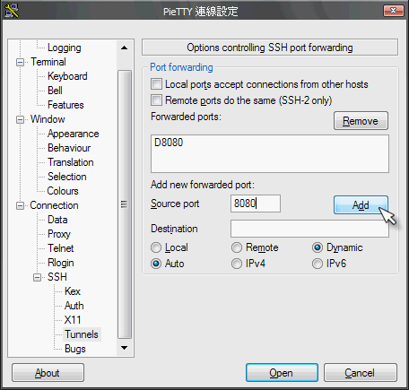
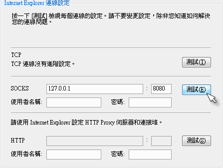
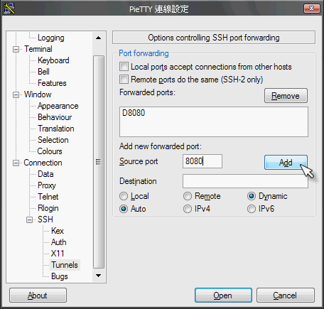
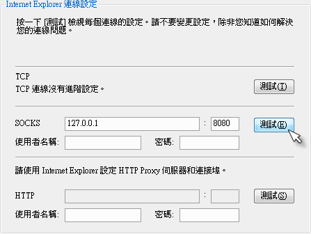

SSH Tunnel
3/Jul 2007
資訊安全 - SSH Tunnel 帶你遨遊
用 putty 來穿透防火牆
紀錄一下
- putty
把 “Local ports accept connections from other hosts” 勾起來
就可以從其他電腦用這個 tunnel 了
好像還蠻危險的
不過有時還不錯用

- FireFox

- MSN

資訊安全 - SSH Tunnel 帶你遨遊
用 putty 來穿透防火牆
紀錄一下
把 “Local ports accept connections from other hosts” 勾起來
就可以從其他電腦用這個 tunnel 了
好像還蠻危險的
不過有時還不錯用

